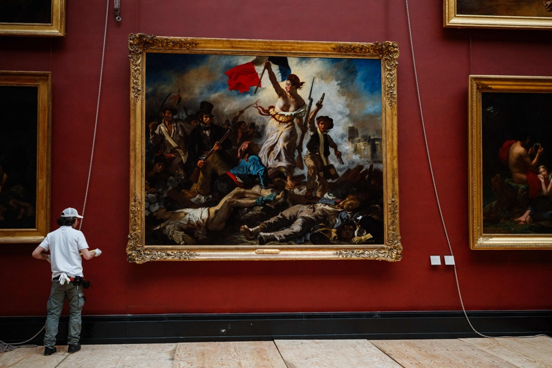
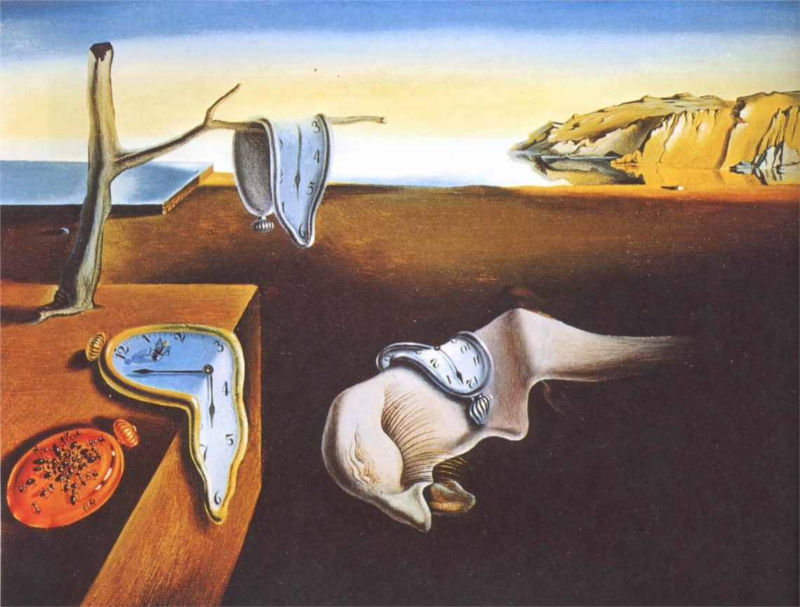

-French Art-

- Famous/Renowned: Yes
- Artist: Eugène Delacroix
- How will it help?:
- My absolute favourite painting of all time.
-
Explore and witness the very foundations of French culture and their values of
-
égalité, fraternité, et liberté. Learn about history, discuss the placement of Lady Libery
- and her international connections, the usage of a woman, connect to other social revolutions around the world
- (like Marxism), and imagine yourself in the very scene. Truly extraordinary.
- Style: Romanticism
- Skills it will improve: Writing, Cultural Awareness, Reading

- Famous/Renowned: Yes
- Artist: Gustave Caillebotte
- How will it help?:
- This famous parisian painting is perfect for describing
-
atmospheres and emotions. Try find the modern photo of where this is in Paris today,
-
anc compare the two! And for a fun exercise, try estimate how it will look in the future!
- Practise your future, present and past tense!
- Style: Impressionism/Realism
- Skills it will improve: Writing, Speaking, Reading, Listening, Cultural Awareness

- Famous/Renowned: Yes, Very
- Artist: Salvador Dalí
- How will it help?:
- Probably the most heady of them all. Explain and attempt to articulate the philosophical
-
concepts with time and dreams. Elaborate on what time means to you, and what it could have meant to Dalí. (Hint: Look at the painting's name!)
- Style: Surrealism
- Skills it will improve: Writing, Cultural Awareness, Reading, Speaking, Listening